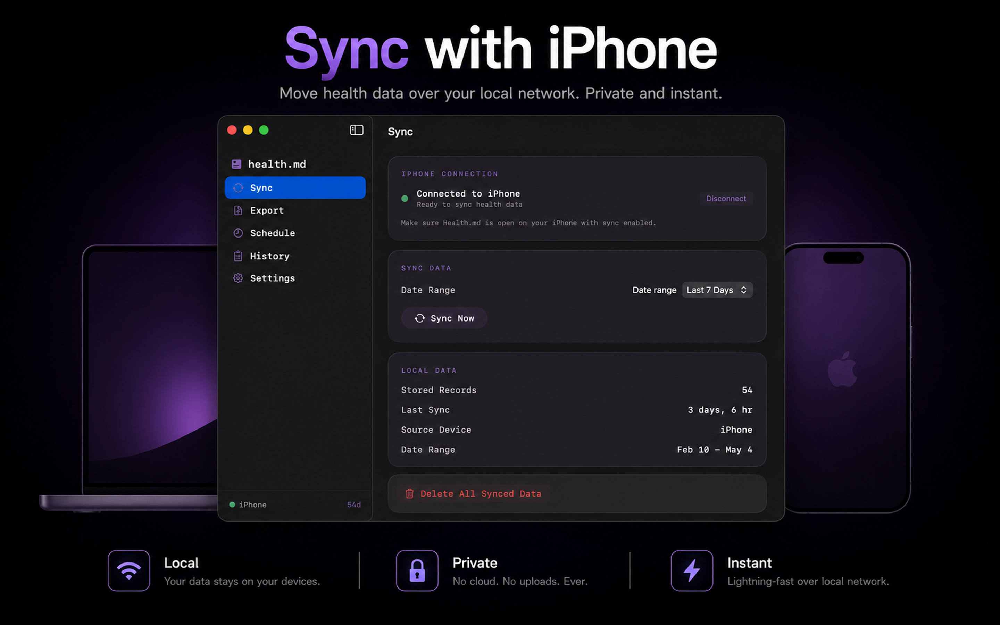
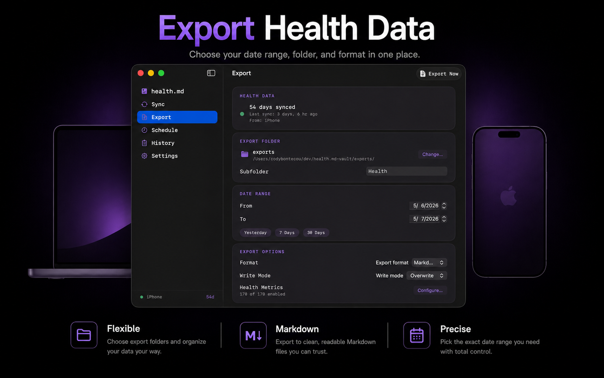

Health.md for Mac gives iPhone exports a desktop destination.
The Mac app is built for people whose archive, Obsidian vault, scripts, or backups live on a desktop machine, while Apple Health still lives on iPhone.

Health.md already lets you export Apple Health data into local Markdown, JSON, CSV, and Obsidian Bases files. The Mac companion extends that workflow by making your Mac a destination for those files.
The important detail is that the iPhone remains the HealthKit source. Your iPhone reads Apple Health, applies the metrics, formats, date range, filename template, folder structure, and write mode you selected, then sends the export job to the Mac. The Mac writes the received files to the folder you chose.
Why use the Mac destination?
- Your Obsidian vault only lives on your Mac.
- You want exports written directly into a folder that is backed up or versioned on macOS.
- You prefer desktop storage for large backfills and long-term health archives.
- You want a menu bar app that keeps destination readiness visible.

What stays private
No remote account is required for this workflow. The Mac destination is local to your Apple devices and folders. Health data is not uploaded to a Health.md cloud service. The files land where you choose: local disk, iCloud Drive, an Obsidian vault, or another folder available to macOS.
What to read next
The updated docs now include a Mac Sync guide, a macOS app guide, and a generated Data Reference page that lists every metric, frontmatter key, unit, aggregation, and exported structure.